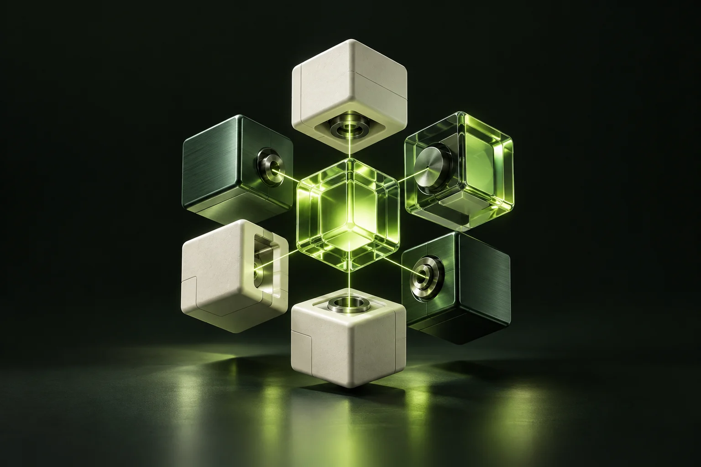

01 / 03 ABOUT ME
让工具，
与你一起思考。
我是 zhangtuo，一名 Agent 工程师。日常专注于智能 Agent 系统、LLM 应用与自动化工作流，把「看似魔法」的能力，变成稳定可靠的工程系统。
相比堆叠新模型，我更着迷于系统设计：上下文管理、工具编排、记忆机制与人机协作。
01 / 03 ABOUT ME
我是 zhangtuo，一名 Agent 工程师。日常专注于智能 Agent 系统、LLM 应用与自动化工作流，把「看似魔法」的能力，变成稳定可靠的工程系统。
相比堆叠新模型，我更着迷于系统设计：上下文管理、工具编排、记忆机制与人机协作。
02 / 03 HOW I BUILD
从一个浏览器里的小工具，到一条能自己执行的工作流，我在意的不只是「能跑」，还有它是否真正好用。
用 Python、TypeScript 与 Go 连接想法，用 React、FastAPI 和熟悉的基础设施把它实现。让 demo 走向 product，也让技术回到具体问题。
03 / 03 STILL CURIOUS
最近在探索多 Agent 协作与工具自动发现，也在把日常工作流封装成可以复用的 Skill。强化学习、模型微调，都是这场探索的一部分。
闲下来会写小工具、读硬科幻、跑步。我相信，好的工具应该让人变得更聪明，也更自由地创造。
到 GitHub 看看我在做什么 （新窗口）A FEW THINGS I’VE MADE
从日常工具到智能体，
一些认真做过的小事。

TOOLS THAT GET OUT OF YOUR WAY.REINFORCEMENT LEARNING / 实验
用 PyTorch 实现的强化学习入门项目。在一个小小的游戏世界里，串起状态、动作、奖励与 Q-learning / DQN 的核心概念。
MODEL FINETUNING / 语言与创作
基于 Hugging Face 数据集，对 Qwen3-0.6B 进行 LoRA 微调。探索模型如何学习唐诗风格，让技术与文字的想象力相遇。
GOOD THINGS START WITH A HELLO.
合作、交流，或只是聊聊 Agent 与 LLM。
如果你也有一个「不如试试」的想法，欢迎来信。